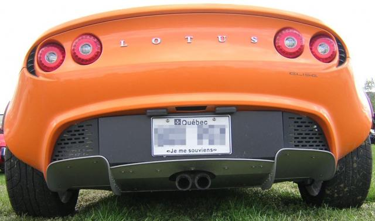

Secrets of Underbody Tunnels, Rear Diffusers and Venturis
Underbody tunnels, rear diffusers and venturis are common terms used to describe the contouring of a racing car's underbody. While largely hidden from view, these devices are the secret weapons in an arsenal of aerodynamic features for generating downforce on racing cars.
 Racing-Car Rear DiffusersPressure coefficient contours, where red is high and blue is low
Racing-Car Rear DiffusersPressure coefficient contours, where red is high and blue is low
Affordable Diffuser Analysis Now
Are you ready for a 30-day free trial of Caedium Professional?

Downforce
Downforce is an essential ingredient in keeping a racing car glued to a racing circuit, especially through corners. By using the motion of the car through the surrounding air it is possible to induce a force perpendicular to the direction of travel. In aircraft the force is directed upward to enable flight; in motor racing the force is directed downward to press the car onto the race circuit.
Ground Effects
The origins of the rear diffuser can be traced back to the 1977 Lotus Type 78 F1 car conceived by Colin Chapman, Peter Wright and Tony Rudd. In a brilliant example of lateral thinking the Lotus team applied the well known "airplane in ground effect" principle (reduced drag) to a racing car and found a significant increase in downforce with minimal increase in drag as a result. By incorporating inverted (compared to an aircraft) airfoil sections into the sidepods of their car, the era of ground effects in Formula 1 was ushered in. A side skirt was connected to the edge of the sidepods and extended down to the road surface. This skirt helped maintain 2D flow characteristics that provide increased downforce and reduced drag compared to a typical 3D wing. The side skirts also hid the new device from the prying eyes of competitors.
The increased cornering speeds encouraged by the first generation of racing car ground effects and the reliability of the side-skirt sealing with the ground raised safety concerns that culminated in a near universal ban of side skirts across all forms of motor sport. However, having had a taste of ground effects, the racecar designers weren't ready to give them up.
Tunnels
Racecar aerodynamicists found that without side skirts it was still possible to induce downforce by sculpting the underbody of a car into 2 tunnels either side of the engine-gearbox assembly. The tunnels ideally start close to the middle of the car, where the maximum downforce will be generated, and then gradually rake upwards (between 4-14 degrees) towards the rear of the car. The overall effect is similar to a venturi in that the air is first accelerated by gradually decreasing the cross-sectional area and then decelerated back to its original speed and pressure by gradually increasing the cross-sectional area. At the highest velocity (smallest cross section) the lowest pressure is produced according to Bernoulli's principle.
 Venturi EffectAirflow through a venturi
Venturi EffectAirflow through a venturi
The effect of such a tunnel on the air is similar to a diffuser. The air enters the diffuser in a low-pressure, high-velocity state after accelerating under the car. By gradually increasing the cross-sectional area of the diffuser, the air gradually slows down and returns to its original free-stream speed and pressure. The diffuser's aim is to decelerate the air without it separating from the tunnel walls, which would cause a stall, reducing the downforce and inducing a large drag force. By installing an inverted wing close to the diffuser exit it is possible to create a low-pressure area, which essentially sucks the air from the diffuser. The diffuser and wing combination permits a higher air-mass-flow rate through the diffuser, thus resulting in higher downforce. Sharp edges on the vertical tunnel walls generate vortices from entrained air and help confine the air through the diffuser and reduce the chance it will separate. Fully optimized tunnels are found on many closed-wheel racing cars such as those used in the American Le-Mans Series.
American Le-Mans Series Car2005 Audi R8
License: CC BY 2.0, Mulsanne
Diffuser
Even so-called "flat bottomed" racing cars, such as those in F1, can create significant downforce from a well-shaped small diffuser. Cars without scope for a diffuser can still generate downforce from a slanted lower surface at the rear of the car in combination with a rear wing.
If you want to investigate ground effects for yourself, try downloading and viewing for free the following airflow simulations in Caedium:
Feedback
Questions? Ideas? Problems?

Recent blog posts
- CFD Simulates Distant Past
- Background on the Caedium v6.0 Release
- Long-Necked Dinosaurs Succumb To CFD
- CFD Provides Insight Into Mystery Fossils
- Wind Turbine Design According to Insects
- Runners Discover Drafting
- Wind Tunnel and CFD Reveal Best Cycling Tuck
- Active Aerodynamics on the Lamborghini Huracán Performante
- Fluidic Logic
- Stonehenge Vortex Revealed as April Fools' Day Distortion Field
 Get our Blog feed
Get our Blog feed
Comments
Lotus Elise Diffuser
Closeup of the rear diffuser on a Lotus Elise.
Lotus Elise Diffuser
And from the front the Elise looks fabulous.
Lotus Elise
Ground effects
I am sure that in the case of race cars, ground effects buy downforce at a modest cost in drag. What about for adding splitter and to a roadcar like an Elise? Will it cost or reduce drag?
best regards, Iain
Drag is a cost of downforce or lift
There's no doubt that a diffuser will produce drag. However, compared to a high-mounted rear wing, a diffuser is a more efficient means of producing downforce, where efficiency is measured as the lift[downforce]-to-drag ratio.
drag from diffuser
often times the area ahead of the bumper is a void, with nothing more than exhaust piping. where the bumper itself can act like a "parachute," couldn't a diffuser very well cause a drag reduction overall? Do you have any AOA suggestions for minimum drag? I know it is very application specific...
diffuser science
the void at the rear of the car is just for look, which is why you will see cars with hole or sections of the rear bumper cut out to reduce parachute effect. if you were to cut out a section of the bumper and fill it in with a diffuser it would greatly reduce drag and create some downforce . alone with a splitter in the front and maybe parts of the underbody covered with sheets of dry carbon or sheet metal you would have more downforce and little parachute effect.
hope this answers your question
Naca Ducts
So in theory, placing brake cooling naca ducts on the underside of the car (front and rear) would create lower pressure under the car, correct?
NASA ducts are not diffusers
I'm not sure what you mean. A NASA duct is a low drag inlet not a diffuser. Maybe if you attached a suction to the inlet it would produce downforce, but this form of active device is banned in most forms of motor sports.
aero
If you have a car with:
* a rear wing mounted with the rear edge of the wing even with the rear most part of the car and the highest point of the wing even with the top of the cab.
* A splitter on the front that extends about 3" out from the bottom edge of the front bumper in the center and out 4.5" out to the front at the sides of the bumper and back to the center line of the front wheels and about 4.5" above the ground.
If you:
* make a diffuser that starts at just behind the center line of the rear wheels and extends back to the rear edge of the rear bumper.
* cut the rear bumper up higher so the angle of the diffuser can be more acute that is have a steeper incline.
* have no modification in the center of the car.
Will the diffuser be effective without having a flat bottom or tunnels in the center portion of the car between the front and rear wheel center lines?
Is this a good way to do things?
any suggestions?
Thanks
Are you familiar with CFD?
Why not perform some CFD simulations to explore your ideas?
Useless knowledge
According to Wikipedia, the Saleen S7 creates it's own weight in downforce at a speed of 160 mph (257km/h). Theoretically, it could drive on a ceiling! In car testings, the S7 even bottomed out at the speed of 287 km/h...
Keep rollin, great article btw.